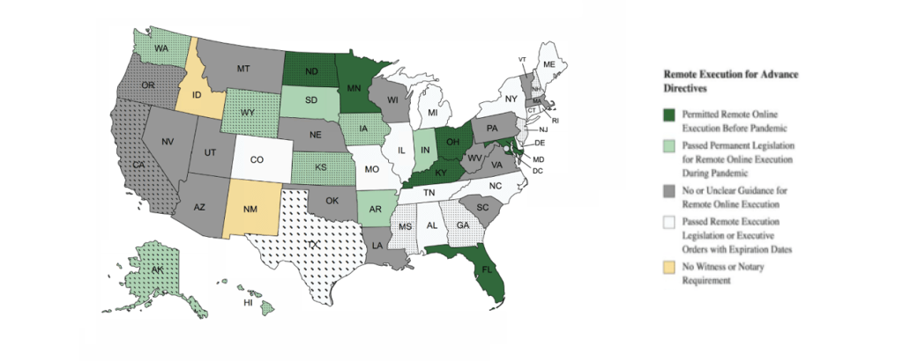
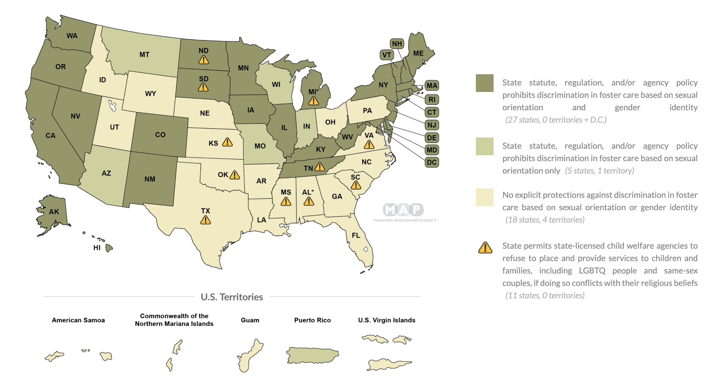
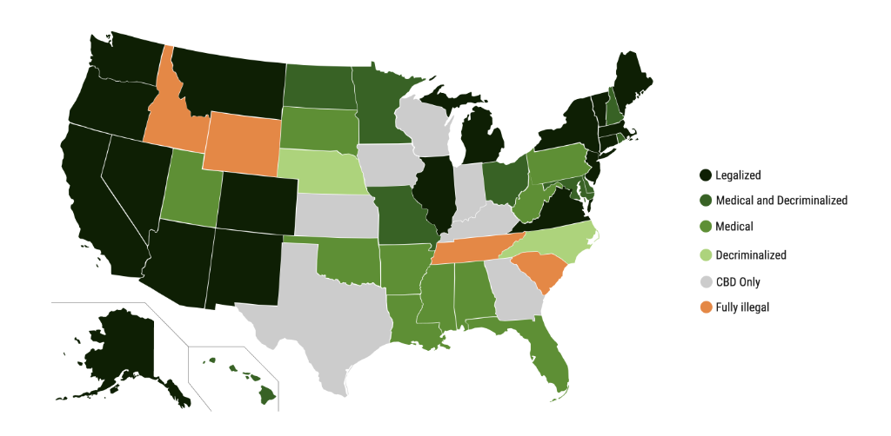

0.5.0 - ci-build
USStateProfiles - Local Development build (v0.5.0). See the Directory of published versions
There is a maxim in the healthcare industry that “all healthcare is local”. As much as some people want national one-size fits all solutions; the fact of the matter is that individual’s health is greatly determined by local environment. Live in northern climates, and emergency rooms have more incidences of frostbite. Live near the beach, and there are more near-drownings. Live near a retirement community, and there will be more falling accidents and chemotherapy procedures.
To complicate matters even more, jurisdictions have different community and cultural values, expressed through local laws. Some states prefer a guided presence from local authorities; others prefer a do-as-you-please mentality. Some states are wary of the impact of recreational drug use in their communities, others see the opportunities for tourism. Some states are in drought conditions with water shortages; others have water in excess.
This particular implementation guide differs from previous versions, in that it recognizes a fundamental interoperability problem at the state level within the United States; expressed through so called ‘culture wars’ and state level laws. It also recognizes the FHIR Profiling features as being perfectly suited for data modeling the differences between states, in much the same way that the European Union must profile its different member states. As such, this implementation guide takes the stance that, as a long term endeavor, there need to be FHIR profiles for each of the 50 states (and US territories), and that healthcare in the US cannot be fully addressed by the US Core profile alone.
There are many situations where using FHIR Profiles is an incorrect approach, but US interstate interoperability is a usecase that FHIR Profiles are precisely designed to address.
After 4 years of developing and piloting Advanced Directive websites and monitoring data-modeling efforts in various HL7 Working Groups, the authors of this IG have identified a number of common topics that appear repeatedly in discussions regarding state-by-state differences in how HIPAA Consent, Living Wills, and Power of Attourney documents are collected. These topics are:
As such, in this implementation guide, we seek to provide examples and methodologies for encoding these differing judicial-legal topics into computational consent records.
To make the necessary encodings, we must lean on a feature of FHIR Profiling called slicing. Slicing allows us to specify required components within an array of set of objects. So, within a Consent records provisions field, we can specify specific provisions as required by the state. Implementors and end users are free to add additional provisions to the record. But the profile slice specifies minimum requirements.
Witness requirements and notary public functions have been part of US jurisprudence since it’s founding, being largely based on English, French, and Spanish contract law respectively. Yet, these legal traditions each presented slightly different requirements, which eventually resulted in the situation where some US states require no signatures for advanced directives, others require a witness, some require two witnesses, and yet others require a notary public. To further complicate matters, COVID19 has created yet more variations in the law, in that people are now allowed to enter contracts remotely using online software services as a witness/notary intermediary.

New Mexico has no requirements for a notary public or witness to verify an advanced directive
{
"resourceType": "Consent",
"policy": {
"authority": "https://www.wyo.gov/"
},
"verification": [],
"provision": {
"type": "permit",
"purpose": [{
"code": "CAREMGT",
"display": "care management",
"system": "http://terminology.hl7.org/CodeSystem/v3-ActReason"
}]
}
}
Florida requires an advanced directive to be verified (although it may be done online)
{
"resourceType": "Consent",
"policy": {
"authority": "https://www.wyo.gov/"
},
"verification": [{
"verified": true,
"verifiedWith: {
"display": "Nancy Notary",
"reference": "RelatedPerson/nancy-notary",
"verificationDate": ""
},
"verificationDate": "2021-10-01"
}],
"provision": {
"type": "permit",
"purpose": [{
"code": "CAREMGT",
"display": "care management",
"system": "http://terminology.hl7.org/CodeSystem/v3-ActReason"
}]
}
}
Foster care nondiscrimination laws protect LGBTQ foster parents and families from discrimination by foster care agencies and officials. Some states permit state-licensed child welfare agencies to refuse to place and provide services to children and families, including LGBTQ people and same-sex couples, if doing so conflicts with their religious beliefs.

TX may deny to consent to share data or treat a foster child, based on the sincere religious beliefs of the clinician
{
"resourceType": "Consent",
"policy": {
"authority": "https://www.texas.gov/"
},
"provision": {
"type": "permit",
"purpose": [{
"code": "COC",
"display": "coordination of care",
"system": "http://terminology.hl7.org/CodeSystem/v3-ActReason"
}],
"provision": [{
"type": "deny",
"class": [{
"code": "Patient",
"display": "Patient",
"system": "http://hl7.org/fhir/resource-types"
}],
"code": [{
"text": "maritalStatus",
"coding": [{
"code": "P",
"display": "Polygamous",
"system": "http://terminology.hl7.org/CodeSystem/v3-MaritalStatus"
}, {
"code": "T",
"display": "Domestic partner",
"system": "http://terminology.hl7.org/CodeSystem/v3-MaritalStatus"
}]
}]
}]
}
}
Marijuana has been listed as a Schedule I controlled substance since the Controlled Substances Act was passed in 1970. However, many states have been taking proactive measures to enact state level laws allowing for medical marijuana, cannabis byproducts such as CBD, industrial hemp, or even outright legalizing it.

WY denies consent for clinicians to use or prescribe medical marijuana during care management
{
"resourceType": "Consent",
"policy": {
"authority": "https://www.wyo.gov/"
},
"provision": {
"type": "permit",
"purpose": [{
"code": "CAREMGT",
"display": "care management",
"system": "http://terminology.hl7.org/CodeSystem/v3-ActReason"
}],
"provision": [{
"type": "deny",
"class": [{
"code": "Medication",
"display": "Medication",
"system": "http://hl7.org/fhir/resource-types"
}],
"code": [{
"text": "Marijuana",
"coding": [{
"code": "1484855",
"display": "Cannabis sativa subsp. flowering top extract",
"system": " http://www.nlm.nih.gov/research/umls/rxnorm#rxcui"
}]
}]
}]
}
}
Cross-sectional analysis of US scope of practice laws and employed physician assistants
Answers To Urgent Questions Notaries Are Asking About Remote Online Notarization
How to Become an Online Notary Guide
Advance Care Planning in an Online World: State Law Activity and Challenges Since COVID-19
Foster and Adoption Laws
Find Advance Directives Forms By State
Map of Marijuana Legality by State